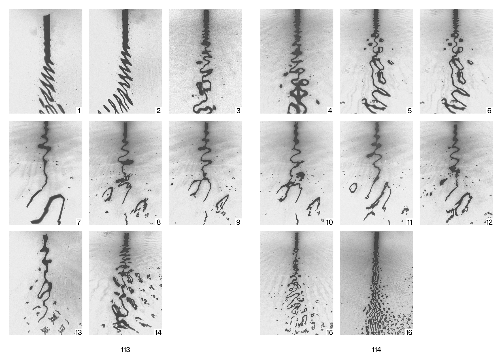

Fine dust on the invisible man
Installation + Book + Video
Fine dust on the invisible man — Polvere fine sull’uomo invisibile, Simone Grimaldi (2026).
Il progetto è un’installazione che nasce dal desiderio di “vestire” esteticamente ciò che, nella vita ordinaria, rimane fuori campo: la trama sottile che collega elementi, presenze e forze della natura. L’opera non mira a rappresentare o spiegare, ma a predisporre una condizione in cui queste relazioni possano affiorare come esperienza sensibile.
Attraverso una struttura essenziale e orizzontale (160 × 80 cm, altezza circa 30 cm), l’installazione programmata costruisce un campo di esistenza in cui l’intra-azione fra elementi diventa soggetto. In questo spazio, ciò che normalmente è invisibile o trascurato viene reso percepibile, non come contenuto da interpretare, ma come inconscio ottico da svelare. Testi e immagini del progetto Fine dust on the invisible man di Simone Grimaldi, realizzato come progetto di tesi alla NABA nel 2026. Con la partecipazone di Giovanni Leopoldo Infatnte, Sergio Leone e Luigi Tirino. ©2026 Simone Grimaldi.


